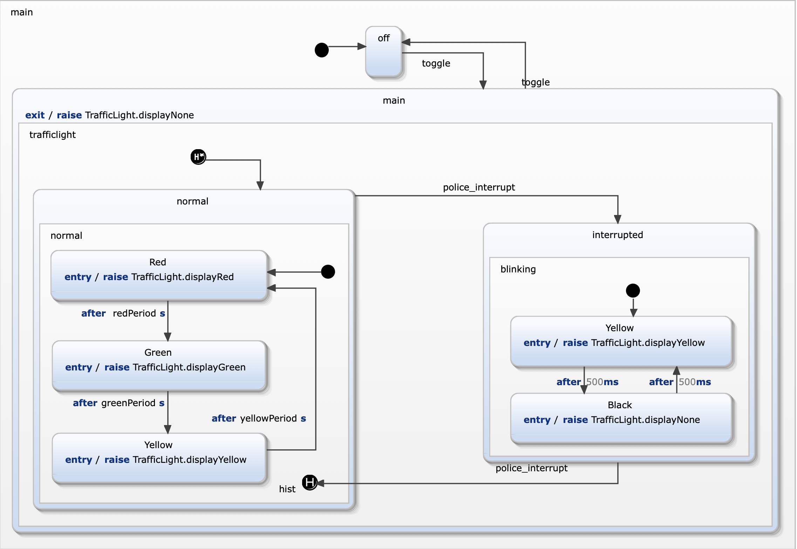

In this exercise you modeled a statechart extension using a test driven approach. The result should be comparable to the follwing statechart...

| requirement | modelling approach |
|---|---|
| R9:The traffic light can be switched on and off | An new incoming event toggle triggers a ransition between two new states on and off. |
| R9a: The traffic light is initially off. | The initial state is off. |
| R9b: If the traffic light is off no light is on. | When state off is initially activated then no lights are switched on. If the previous state is on then lights are switched while leaving state on. |
| R9c: After switching off and on again the traffic light must switch on the previously activated light. | State normal is entered using a deep history. This restores all states. |